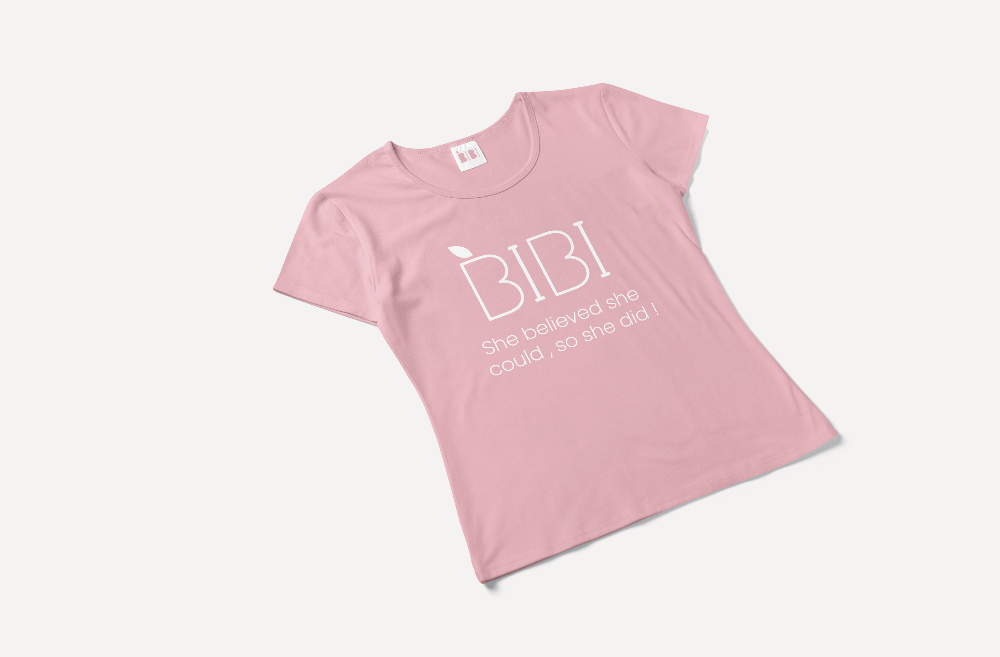
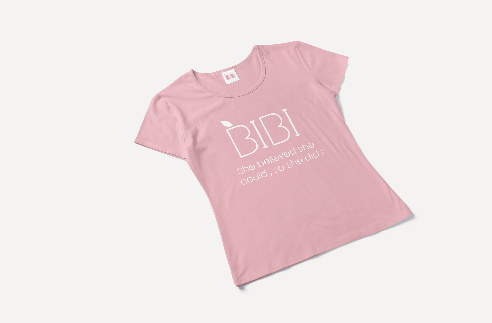

Brand design and Company fashion door Studio Suus
Bibi Is een jong bedrijf uitgebaat door 2 straffe madammen voor straffe madammen.
Bibi is een samenwerking tussen een Voedingscoach en een Personal trainer die zicht focussen op het geven van Mealprep en Movement caching aan vrouwen.
Ze willen een veilige en aangename omgeving creëeren specifiek voor vrouwen. Waar ze zichzelf op de plaats kunnen zetten en kunnen focussen
op het verwerven van een gezonde levensstijl. Deze gezonde levensstijl word op maat van de klant samengesteld door middel van toffe en gezonde recepten en motiverende
fitness coaching zowel persoonlijk als in groep.
Ik ben zelf ook klant en grote fan van Bibi en ondanks dat ze al met een grafisch ontwerper werken leek het mijeen toffe uitdaging om voor hen
een fictieve huisstijl en company fashion lijn te maken.


De uitbaters van Bibi sporten dagelijks tijdens het begeleiden van de trainings sessies en hebben dus ook aangepaste en gepersonaliseerde sportkledij nodig.
Daarom ontwierp ik een aantal basis outfits met optioneel bijpassende sport accessoires zoals een drink bus, handdoekjes en sport rugzakje.
Op het vlak van textielbedrukking geef ik graag ook technisch advies over de bedrukking of afwerking die het best past bij de noden van de klant.
Sport kledij is meestal van hele strechy en synthetische stoffen gemaakt waardoor de bedrukking best met digi-flex transfers gedaan zou worden.
(Dit is een techniek waarbij het geprinte ontwerp aan hoge temperatuur en druk geperst word op de textiel.
Dit zorgt voor een duurzamer resultaat dat stevig is, mee streched en vaak gewassen kan worden.


 
